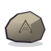
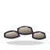
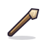
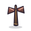
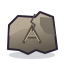
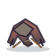

Orden en cada fila: roca marcada · sendero · herramienta · poste con cintas · símbolo en ruina · campamento vacío. Las señales son objetos estáticos de una casilla, sobre terreno bloqueado.

roca_marcada · pradera
sendero · pradera
herramienta · pradera
poste_cintas · pradera
simbolo_ruina · pradera
campamento_vacio · praderaConcepto provisional. El símbolo A de la roca y la ruina conserva igual silueta y proporciones.